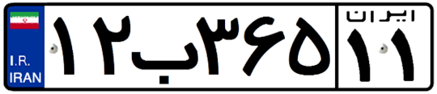
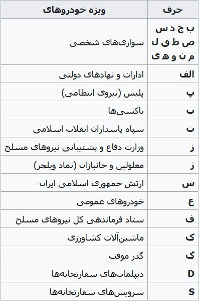
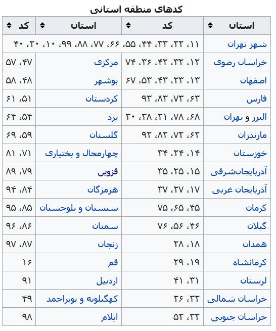
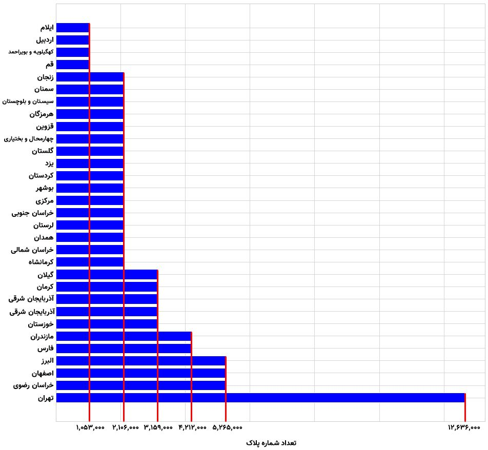
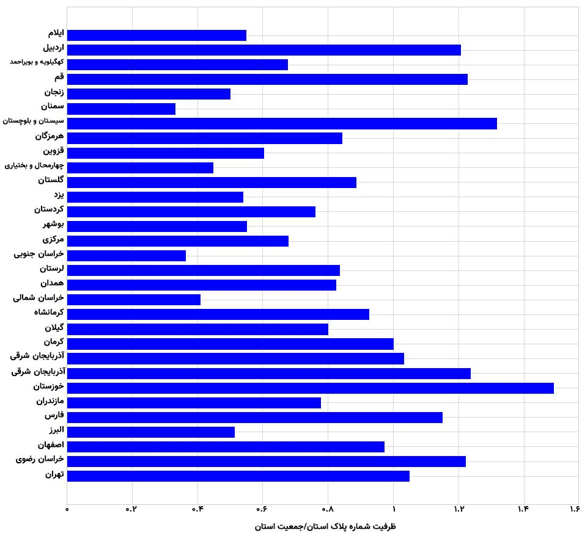
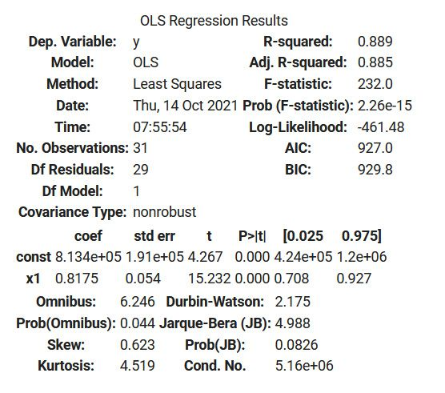
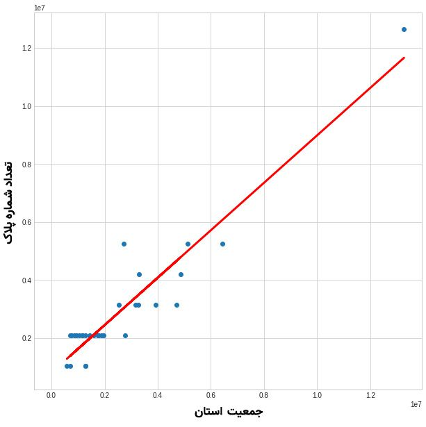
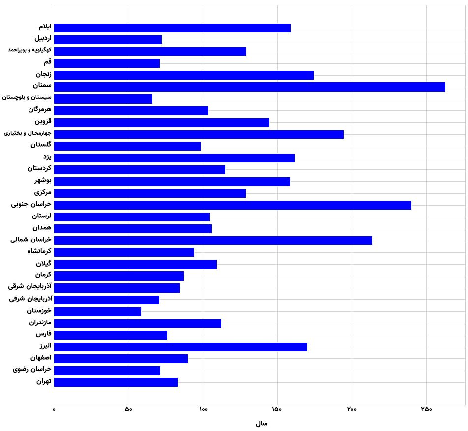

در این مقاله قصد دارم یکسری تحلیل آماری بر روی شماره پلاک خودرو های ایران انجام بدم که صرفا حالت فان داره و کاربرد خاصی نداره. این رو همین اول گفتم که انتظار یه چیز خارق العاده نداشته باشید. صرفا یه بازی با اعداده!!خیلی سریع میرم سراغ اصل مطلب. در تصویر زیر نمونهای از یک پلاک خودرو را مشاهده میکنید :

همونطور که میبینید به ترتیب از چپ به راست یک عدد ۲ رقمی، یکی از حروف الفبا، یک عدد ۳ رقمی و در نهایت یک عدد ۲ رقمی دیگه رو داریم. اول بیاید ببینیم کلا چند تا حالت برای شماره پلاک خودرو میتونیم داشته باشیم؟ برای انجام این کار از جایگشت استفاده میکنیم.برای ۲ رقم اول ما میتونیم ۹۰ حالت مختلف رو داشته باشیم :
چه جوری اینجوری شد؟ کلا ۱۰ تا رقم داریم. در جایگاه اول نمیتونه صفر قرار بگیره. پس ۹ حالت رو داریم. اما در جایگاه دوم همه اعداد میتونن قرار بگیرن. به همین ترتیب، برای دو رقم آخر هم میتونیم ۹۰ حالت مختلف رو داشته باشیم. برای ۳ رقم بعدی هم به همین شکل میتونیم تعداد تمام حالت های ممکن رو پیدا کنیم :
تعداد حروف الفبای فارسی ۳۲ تاست. اما برای شماره پلاک خودرو ها از تمام این ۳۲ حرف استفاده نمیشه. حروفی که برای شماره پلاک خودرو ها استفاده میشه در جدول زیر نشون داده شده :

تعداد کل حروفی که در جدول بالا قرار داده شده ۲۶ تاست که ۲ تا از اونها حروف انگلیسی هستند.حالا میخوایم ببینم با این اوصاف کلا چند تا شماره پلاک میتونیم داشته باشیم؟ اگر تمام ۲۶ حرف الفبا رو در نظر بگیرم میتونیم ۱۸۹,۵۴۰,۰۰۰ پلاک مختلف داشته باشیم :
اگر حروف انگلیسی رو حذف کنیم، میتونیم ۱۷۴,۹۶۰,۰۰۰ شماره پلاک مختلف داشته باشیم :
اگر تمام حروف الفبای فارسی (۳۲ حرف) رو در نظر بگیریم، میتونیم ۲۳۳,۲۸۰,۰۰۰ شماره پلاک مختلف داشته باشیم :
نکته ای که در اینجا وجود داره اینه که به ازای هر یک از حروف الفبا، ما میتونیم ۷,۲۹۰,۰۰۰ شماره پلاک داشته باشیم :
اما در واقعیت ما واقعا ۷ میلیون ماشین پلیس، ارتش، دولتی و … نداریم. از طرفی، این پلاک ها چیزایی نیستند که مردم عادی بتونن بگیرن. پس من میام پلاک های خاص رو حذف میکنم. بنابراین اگر فقط پلاک های شخصی رو در نظر بگیریم، میتونیم ۹۴,۷۷۰,۰۰۰ شماره پلاک شخصی داشته باشیم :
حالا به کمک جدول زیر میخوام بررسی کنم که ظرفیت پلاک هر استان چقدره؟

تعداد شماره پلاک هایی به ازای هر کد منطقه میتونیم داشته باشیم ۱,۰۵۳,۰۰۰ عدد است :
پس اگر یه استانی ۴ تا کد منطقه داشته باشه، یعنی میتونیم ۴,۲۱۲,۰۰۰ شماره پلاک در اون استان داشته باشیم. نمودار زیر تعداد ظرفیت شماره پلاک هر استان را نشان میدهد :

اگر جمعیت هر استان را به ظرفیت شماره پلاک اون استان تقسیم کنیم و نمودار آن را رسم کنیم نتیجه به صورت زیر خواهد بود :

مثلا جمعیت استان خراسان رضوی ۶,۴۳۴,۵۰۱ نفر است. ظرفیت شماره پلاک این استان هم ۵,۲۶۵,۰۰۰ عدد است. اگر ۶,۴۳۴,۵۰۱ را بر ۵,۲۶۵,۰۰۰ تقسیم کنیم، نتیجه ۱.۲ میشود.حالا میخوام بررسی کنم آیا رابطهای بین جمعیت استان و تعداد پلاک اختصاص یافته به اون وجود داره یا نه؟ برای این کار از روش OLS رگرسیون خطی استفاده میکنم. در رگرسیون ما یک متغیر وابسته و یک متغیر مستقل داریم. در نقل قول زیر که از این لینک گرفته شده است تفاوت متغیر وابسته و مستقل بیان شده است :به عنوان مثال در حوادث مربوط به رانندگی در جادهها، عوامل وضعیت هوا، کیفیت جاده، وضعیت راننده، استحکام خودرو و زمان تصادف که متغیرهای پیشگو (مستقل) هستند، بر میزان خسارت که متغیر پاسخ (وابسته) است تاثیر میگذارند. نتیجه رگرسیون، معادلهای است که بهترین پیشگویی یک متغیر وابسته را از روی چند متغیر مستقل نشان میدهد.در این مسئله، جمعیت استان ها را متغیر مستقل و تعداد شماره پلاک ها را متغیر وابسته در نظر گرفتم. برای پیادهسازی روش OLS از کتابخانه statsmodels در پایتون استفاده کردم که نتایج آن به صورت زیر است :

برای اینکه درک بهتری داشته باشیم، نمودار Scatter آن را هم رسم کردم که در تصویر زیر نشان داده شده است:

معادله خط بالا به صورت زیر است :
که y متغیر وابسته (تعداد شماره پلاک ها) و x متغیر مستقل (جمعیت استان ها) است. برای مثال اگر جمعیت یه ۱۰۰ میلیون نفر برسد، این رابطه پیشبینی میکند که ۸۲,۵۶۳,۴۰۰ شماره پلاک خواهیم داشت.حالا سوالی که اینجا پیش میاد اینه که چند سال طول میکشه که این تعداد شماره پلاک تخصیص داده بشه؟ اول باید ببینیم آمار سالانه تولید خودرو چقدره؟ بر اساس جداولی که در این لینک وجود داره، میشه گفت که به صورت میانگین، روزانه ۲۵۰۰ خودرو در کل کشور تولید میشه. نمودار زیر نشون میده بر اساس ظرفیت شماره پلاک هر استان، چند سال طول میکشه تا تمام ظرفیت تخصیص داده بشه :
برای مثال، اگر روزانه ۲۵۰۰ خودرو پلاک بشه، ۱۳ سال طول میکشه تا ظرفیت شماره پلاک های استان تهران به اتمام برسه. البته نکته ای که در اینجا وجود داره اینه که این ۲۵۰۰ خودرو که در روز تولید میشه برای یک استان نیست و برای کل کشوره. پس برای اینکه نمودار دقیق تری داشته باشیم، این ۲۵۰۰ تا رو بین استان های مختلف تقسیم میکنم. مثلا اگر تهران ۱۷ درصد جمعیت کشور رو تشکیل میده، من میام فقط ۱۷ درصد ۲۵۰۰ (که میشه ۴۲۵) رو برای تهران در نظر میگیرم :

مثلا اگر روزانه ۴۲۵ خودرو در تهران تولید بشه، ۸۱ سال طول میکشه ظرفیت شماره پلاک هاش تموم بشه.این داستان ادامه دارد …
nb.neighbours()
| title | date | |
|---|---|---|
| prev | یافتن نقطهٔ بهینه موقع گرفتن اسنپ! | ۱۴۰۰/۰۵ |
| next | کنکور و بازی با احتمالات؟! | ۱۴۰۰/۰۸ |